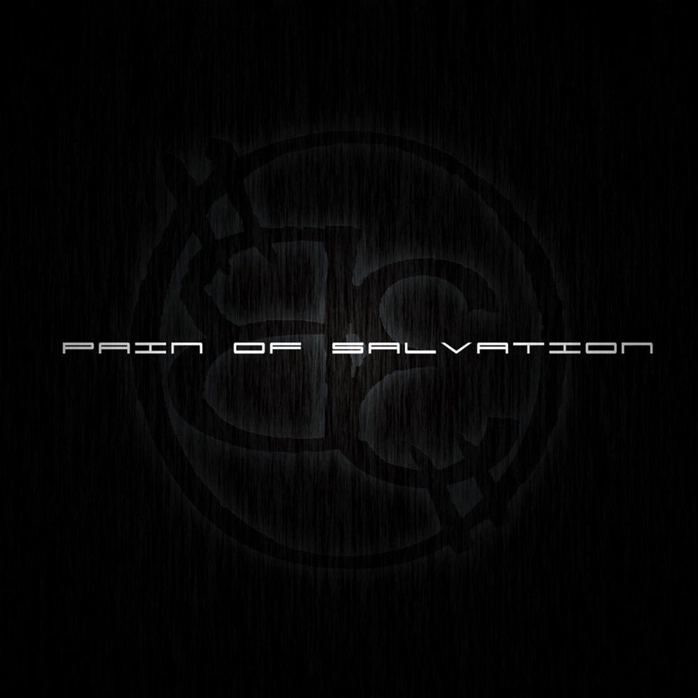
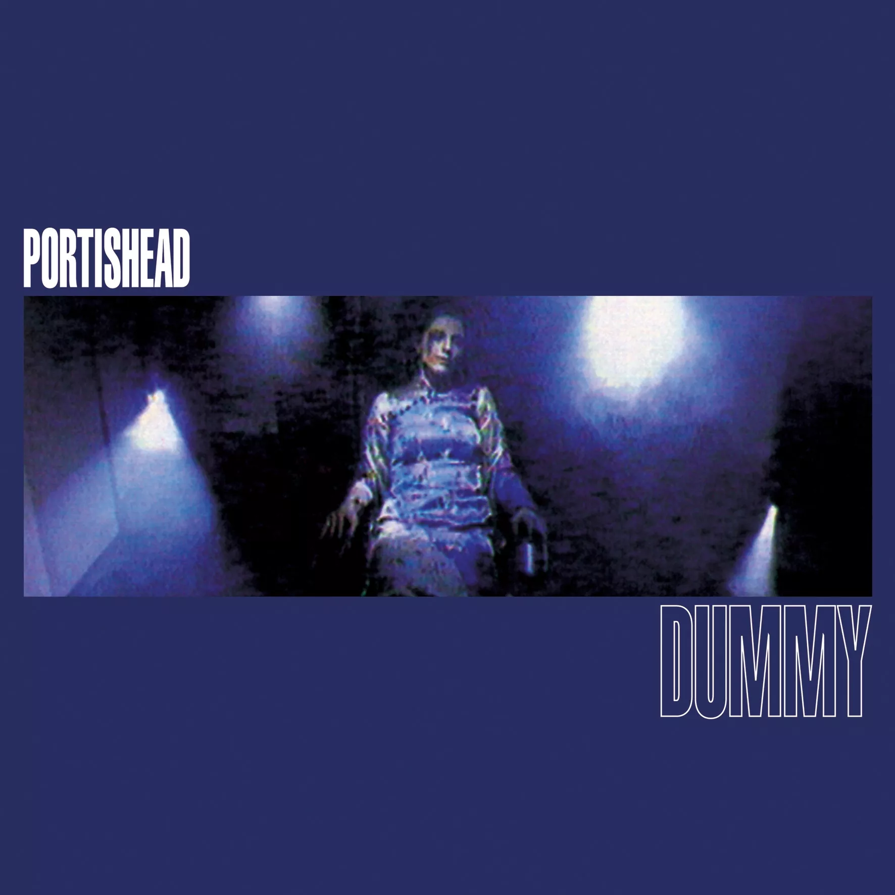
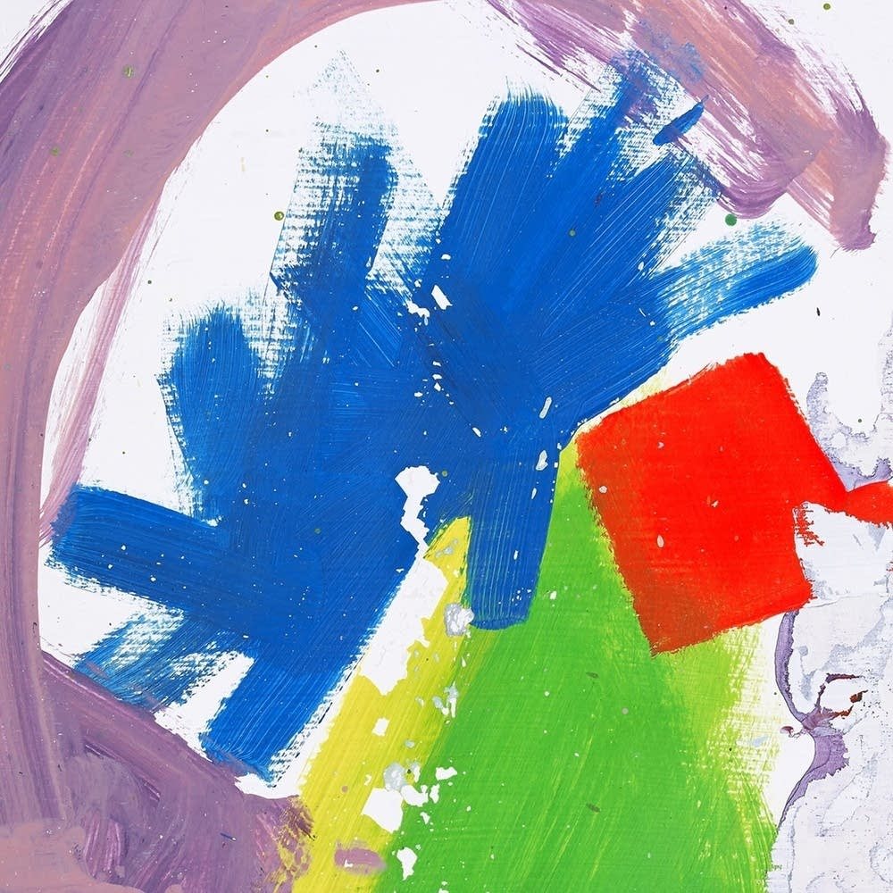

Karina Merulla
Singer & "Halfstack" Developer
"Dream on, dream until your dreams come true"
My Favorite Albums
|  |
Pain of Salvation - BeBE attempts to explore the many facets of human existence. It begins with the narration of Animae; someone or something who/that has existed for as long as he/she/it can remember and contemplates the nature of his/her/its existence and then begins a journey of understanding with the words: "I will call myself GOD and I will spend the rest of forever trying to figure out who I am". |
|  |
Portishead - DummyDummy is the debut studio album by English electronic band Portishead, released on 22 August 1994 by Go! Beat Records. The album received critical acclaim and won the 1995 Mercury Music Prize. It is often credited with popularising the trip hop genre, and is frequently cited in lists of the best albums of the 1990s. |
|  |
Alt-J - This is all YoursThis Is All Yours is the second album by English indie rock band alt-J, released on September 22, 2014 through Infectious. It was promoted with four singles: "Hunger of the Pine", "Left Hand Free", "Every Other Freckle", and "Warm Foothills". It topped the UK Albums Chart, was runner up in Belgium, Australia, and Canada and reached #4 in the United States. It was nominated for the Grammy Award for Best Alternative Music Album. |